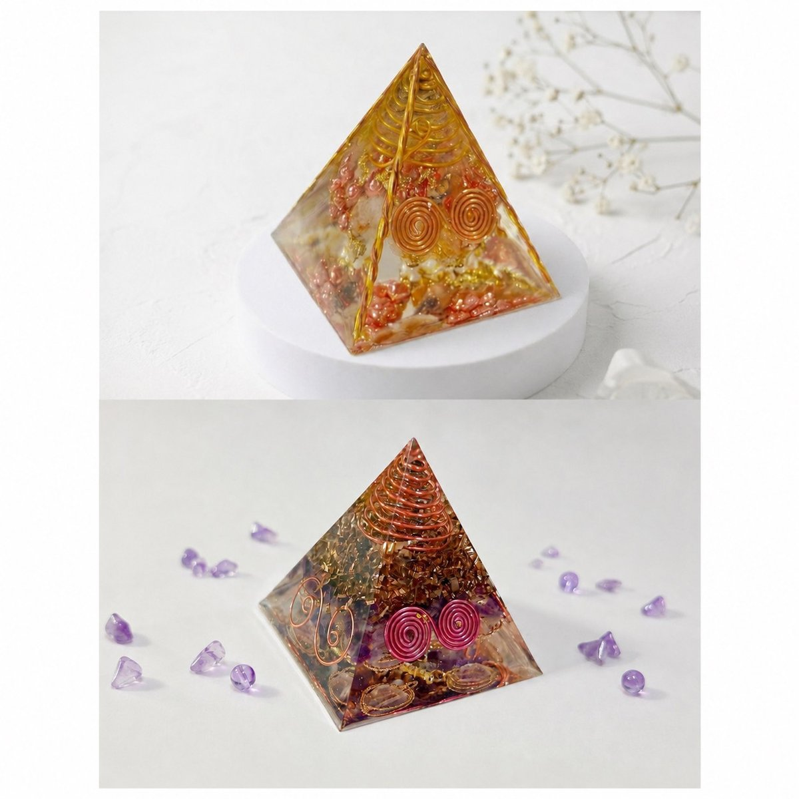
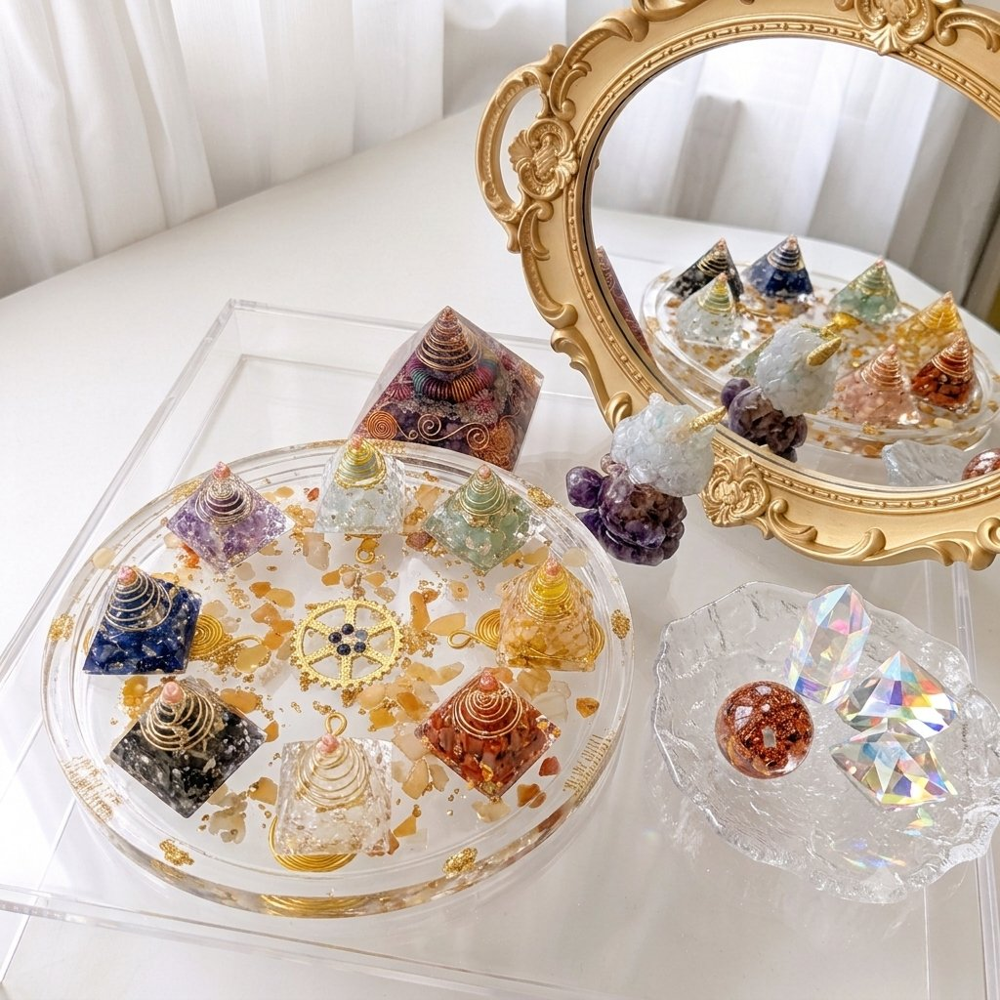
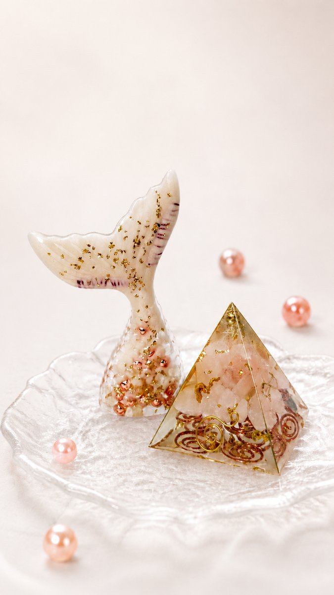
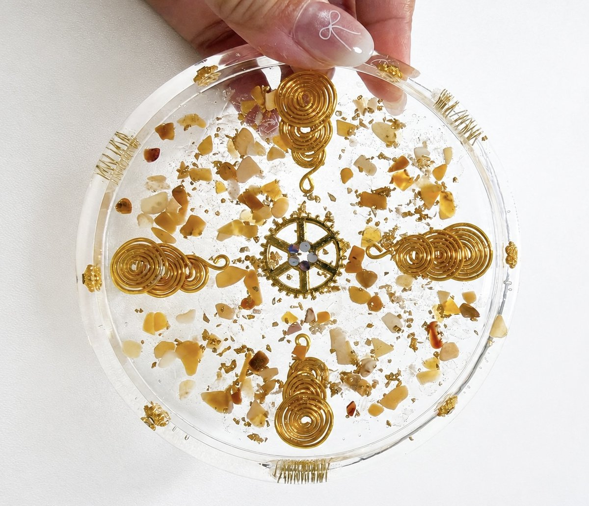
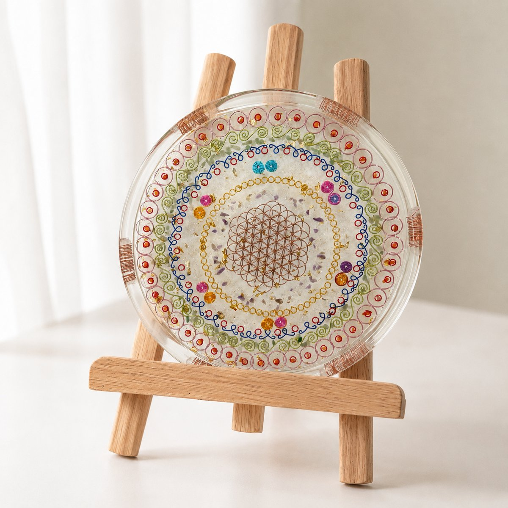
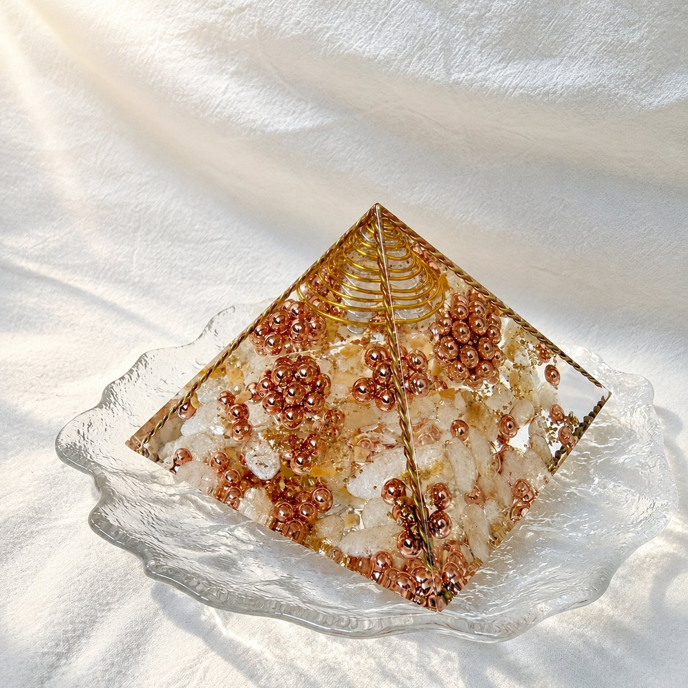
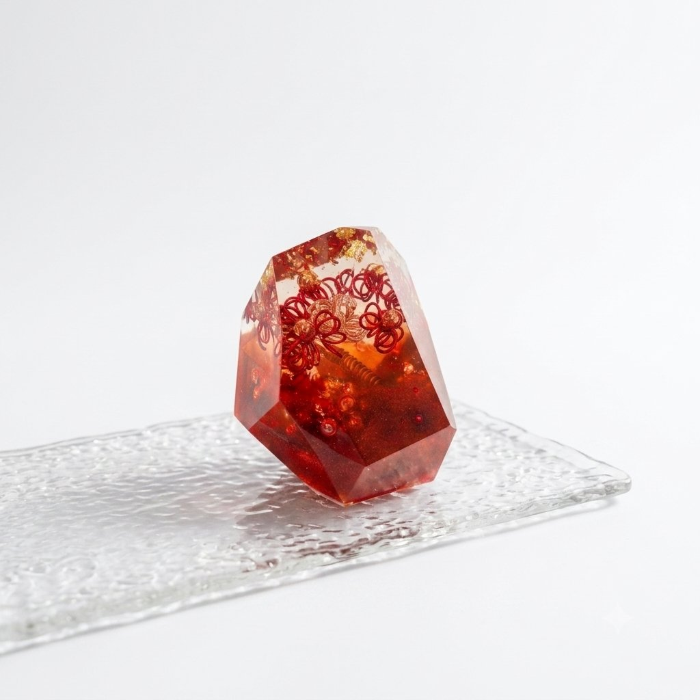

Our Practice
每個領域都有自己的入門與進階課程。先看看哪一個在叫你，再進去看完整課表。


About Us
芯光點點是一間位於新北板橋、新埔捷運站旁的工作室。我們從奧剛能量藝術開始，慢慢長出曼陀羅、塔羅與八字——形式不同，做的其實是同一件事：讓人在忙亂的日子裡，有一段能安靜下來、把注意力放回自己身上的時間。
手作與繪畫，是用雙手慢下來；牌卡與命盤，是換個角度看自己。它們不互相取代，你可以只選一種，也可以在不同階段走進不同的房間。
所有課程與服務都採一對一或小班制，零基礎可以直接開始。教室採預約制，時間依你的節奏彈性安排。

Gallery




